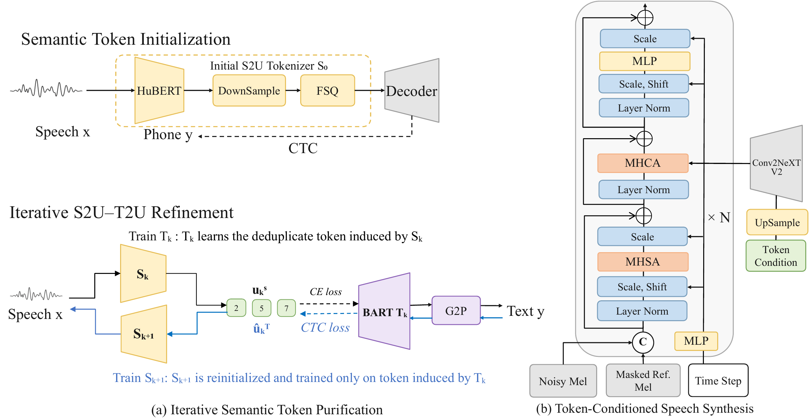

Semantic Speech Tokenization
NormToken
Speaker- and Duration-Normalized Semantic Speech Tokens
via Iterative S2U–T2U Refinement
1City University of Hong Kong 2AI Lab, Leibniz Research Center, Huawei 3Chinese University of Hong Kong
Abstract
01
Figure PDF
Method

02
Seed-TTS
Text-to-Speech
03
Seed-TTS